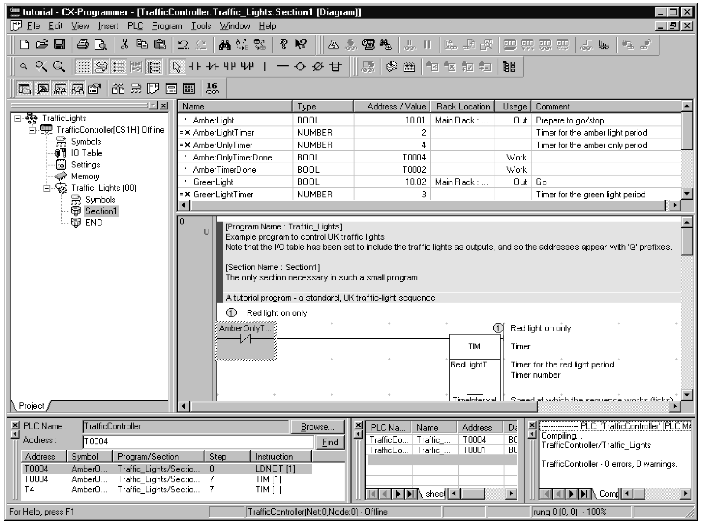
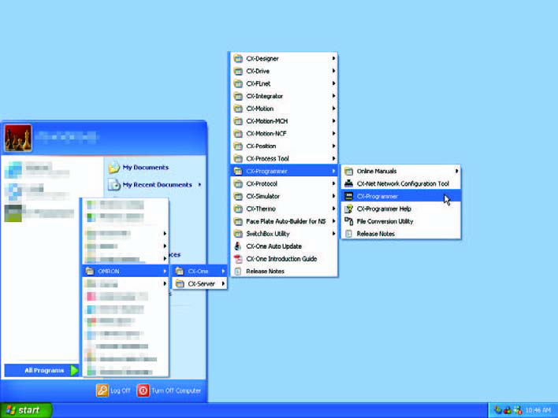
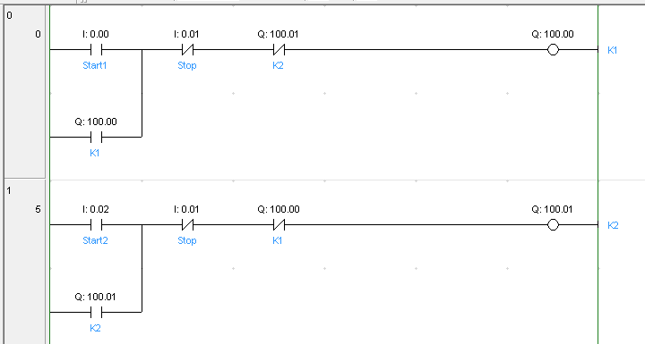
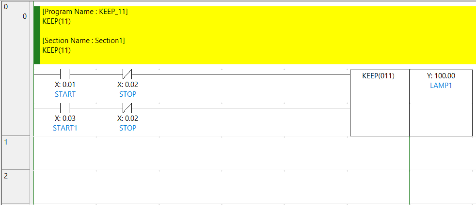
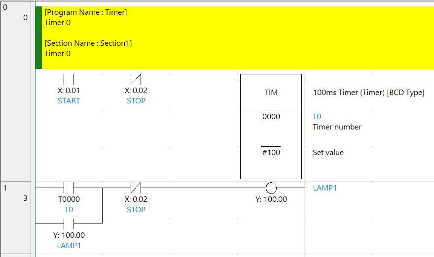
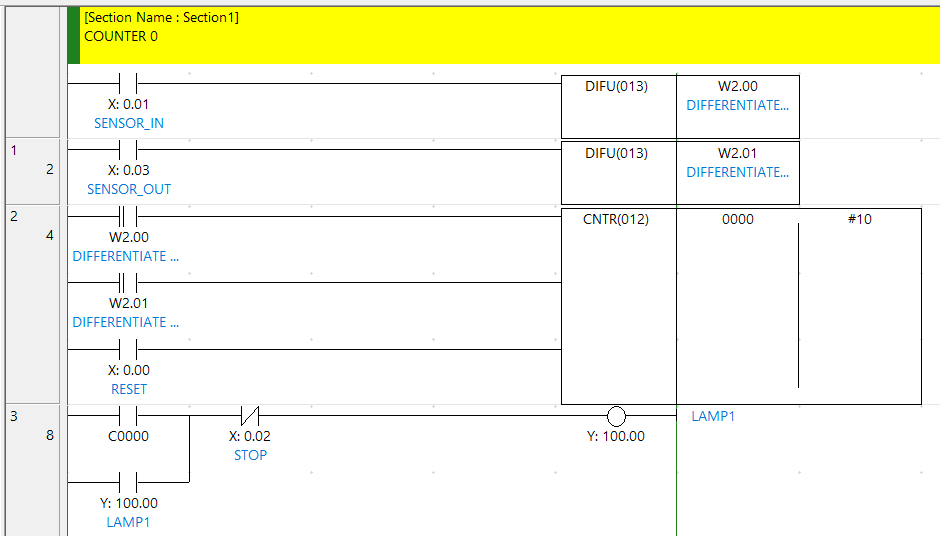

CX-Programmer Ladder & คำสั่งพื้นฐาน
CX-Programmer เป็น IDE หลักของ Omron ตั้งแต่ปี 2000 — ใช้ได้กับ CP1E/CP1L/CP1H/CP2E และซีรีส์ CJ/CS/CV ทั้งหมด. บทนี้พาเขียน Ladder ตั้งแต่ Contact-Coil พื้นฐาน, KEEP, TIM, CNTR, DIFU/DIFD ครบเซต
· CX-Programmer (ในชุด CX-One) → CP1/CP2 และซีรีส์ Legacy
· Sysmac Studio → NJ/NX series เท่านั้น (Machine Automation Controller)
CP1L ห้อง Lab ของเราใช้ CX-Programmer
Device Memory — สัญลักษณ์ของ Omron
| Area | ตัวอย่าง | หน้าที่ | ขนาด |
|---|---|---|---|
| CIO (I/O) | 0.00, 0.01 | Input bits (จากหน้าตู้) | Word.Bit |
| CIO (I/O) | 100.00, 100.01 | Output bits (ไปหน้าตู้) | Word.Bit |
| W (Work) | W0.00 ถึง W511.15 | "Internal Relay" — bit ภายในใช้ได้อิสระ | Bit |
| H (Holding) | H0.00 ถึง H511.15 | Internal bit ที่ ค้างค่าเมื่อปิดเปิด | Bit (Retentive) |
| D (Data) | D0 ถึง D32767 | Data register 16-bit | Word |
| T | T0 ถึง T4095 | Timer (bit + word ของค่านับเหลือ) | Both |
| C | C0 ถึง C4095 | Counter | Both |
| A (Auxiliary) | A640.00, P_1s | System flags (เช่น 1.0s clock pulse) | Special |
X0, Y10, M5 ตรง ๆ
Omron ทุก bit เป็น Word.Bit — เช่น
0.00 (Word 0, bit 0), 0.05, 0.06... ขึ้น 0.15 แล้วต่อด้วย 1.00
Output เริ่มที่ Word 100 เป็นต้นไป (PLC จะกำหนดช่วง CIO Word ของ Input/Output ตามรุ่น)
หน้าตา CX-Programmer


เริ่มเขียน Project ใน CX-Programmer
-
สร้าง Project ใหม่
File → New → CX-Programmer Project→ ตั้งชื่อ → Device Type:CP1L→ Settings: เลือก CPU sub-type (เช่น CP1L-EM30D...) -
วาด Rung แรก
คลิกที่ตำแหน่งใน Section ladder → กดคีย์ลัด:
- C = New Contact NO (—| |—)
- / = New Contact NC (—|/|—)
- O = New Coil (—( )—)
- I = Instruction (MOV, KEEP, TIM, ฯลฯ)
-
ใส่ Address
พิมพ์ address ในรูปแบบ Word.Bit หรือ Word — เช่น
0.00,100.01,D10→ Enter -
Compile (F7)
ทุกครั้งที่แก้ Ladder → กด F7 หรือเมนู
Program → Compile All PLC Programs -
เชื่อมต่อ PLC
PLC → Work Online(Ctrl+W) → เลือก Network Type (USB / Ethernet / Serial) -
Transfer to PLC
PLC → Transfer → To PLC→ เลือก Program + Settings + I/O Table → กด Yes

⚙️ PLC ทำงานยังไง — Scan Cycle
ก่อนเริ่มเขียน Ladder จริง — เข้าใจก่อนว่า CP1L (และ PLC ทุกตัว) ไม่ได้
ทำงานแบบ Event-driven แต่วน Scan Cycle ทีละเฟส · ลองกดสวิตช์ 0.00
ในจังหวะต่าง ๆ ดูว่าเมื่อไหร่ 100.00 ติด
คำสั่งกลุ่มที่ 1 — Logic พื้นฐาน
Start/Stop พร้อม Self-hold

ในรูป — Rung 0:
LD 0.00 ; ปุ่ม Start1 (NO)
OR 100.00 ; Self-hold ของ K1
ANDNOT 0.01 ; ปุ่ม Stop (NC contact)
ANDNOT 100.01 ; Interlock — ห้าม K1 ON ถ้า K2 ON
OUT 100.00 ; K1 (Output)SET / RSET — Latch / Unlatch
Omron ใช้ RSET (ไม่ใช่ RST เหมือน Mitsubishi):
LD 0.00 ; Start
SET 100.00 ; ON ค้าง
LD 0.01 ; Stop
RSET 100.00 ; OFFKEEP(11) — เฉพาะ Omron
Omron มีคำสั่ง KEEP ที่รวม SET/RST ไว้ใน Block เดียว — เรียบร้อยกว่าและอ่านง่ายกว่า:

KEEP(11) — input ด้านบน = Set, ด้านล่าง = Reset, output = bit ที่ค้างค่า. ในตัวอย่าง: I:0.01 (START) + I:0.03 (START1) → Set, I:0.02 (STOP) → Reset, output Y:100.00 (LAMP1)Set input ──┤ ├──────┐
│ KEEP(11)
Reset input ──┤ ├──────┤ Bit ที่ Latch
─────────────🧩 ลองสร้าง Rung — Self-Hold (Omron syntax, Drag & Drop)
ลองประกอบ Rung เองด้วย Address ของ Omron — ลากบล็อกจาก palette ใส่ในช่อง:
🎮 ลองเล่น — Self-Hold (Omron syntax)
แบบเดียวกับ Mitsubishi M02 — แต่ Address ใช้ 0.00 (Start) / 0.01 (Stop) / 100.00 (Output) ตามแบบ Omron:
คำสั่งกลุ่มที่ 2 — Timer (TIM)

| คำสั่ง | หน่วยเวลา | ตัวอย่าง |
|---|---|---|
TIM | 100 ms (0.1 s) | TIM 0 #50 = T0 ครบใน 5.0s |
TIMH(15) | 10 ms | TIMH(15) 0 #50 = 0.5s |
TMHH(540) | 1 ms | TMHH(540) 0 #500 = 0.5s |
TIML(542) | 100 ms (long, 32-bit count) | สำหรับเวลานานกว่า 99 นาที |
หลังจาก TIM ทำงานครบ — bit T0 (เลขเดียวกับ Timer number) จะเป็น ON ใช้ในรังถัดไปได้:
; รอ 5 วินาทีหลังกดปุ่ม → เปิด Lamp
LD 0.00 ; ปุ่ม
TIM 0 #50 ; T0 = 5.0s
LD T0
OUT 100.00 ; LAMP ON🧩 Build the Rungs — Timer ON-Delay (Omron)
ลองประกอบ 2 Rung สำหรับ Timer — แต่ใช้ Address Omron:
🎮 ลองเล่น — Timer ON-Delay (Omron)
กด 0.00 ค้างไว้ 3 วินาที → T0 ครบ → 100.00 ติด:
คำสั่งกลุ่มที่ 3 — Counter (CNT / CNTR)

DIFU(013) สร้าง Pulse 1 scan ตอนที่ Sensor เปลี่ยน OFF→ON → CNTR(012) #10 นับครบ 10 ครั้ง → C0 ON → ปลุก Lamp1| คำสั่ง | ประเภท | หมายเหตุ |
|---|---|---|
CNT | Down counter | นับลงจาก preset |
CNTR(12) | Reversible (Up/Down) | นับขึ้น-ลง — ใช้กับ Encoder, ระดับวัสดุ |
DIFU(13) | Differentiate Up | สร้าง pulse 1 scan ตอน rising edge (OFF→ON) |
DIFD(14) | Differentiate Down | สร้าง pulse 1 scan ตอน falling edge (ON→OFF) |
; Sensor In + Sensor Out → CNTR up/down
LD 0.01 ; Sensor In
DIFU(13) W2.00 ; pulse บน W2.00
LD 0.03 ; Sensor Out
DIFU(13) W2.01 ; pulse บน W2.01
LD W2.00 ; up trigger
LD W2.01 ; down trigger
LD 0.00 ; reset
CNTR(12) 0 #10 ; C0 — reversible counter, preset 10
LD C0
OUT 100.00 ; LAMP🧩 Build the Rungs — Counter (Omron)
ลองประกอบ 2 Rung สำหรับ Counter ด้วย Address Omron:
🎮 ลองเล่น — Counter (Omron)
กด 0.00 นับ Pulse 5 ครั้ง → 100.00 ติด · กด 0.01 = Reset:
ตัวอย่างใช้งานจริง — Star–Delta Motor Starter ใน Omron
Sequence เหมือนกับฝั่ง Mitsubishi (ดู M02) แต่ Syntax ต่าง:
-
กำหนด I/O Mapping
0.00= Start ·0.01= Stop ·0.02= Overload (NC)100.00= K1 Main ·100.01= K2 Star ·100.02= K3 Delta
-
Rung 1 — Main + Self-hold
LD 0.00 ; Start OR 100.00 ; Self-hold ANDNOT 0.01 ; Stop AND 0.02 ; Overload OK OUT 100.00 ; K1 -
Rung 2 — Star ON ระหว่าง T0 ยังไม่ครบ
LD 100.00 ; K1 ON ANDNOT T0 ; T0 ยังไม่ครบ OUT 100.01 ; K2 Star LD 100.00 TIM 0 #50 ; 5.0s -
Rung 3 — Delta หลัง T0 + Interlock
LD T0 ; T0 ครบแล้ว ANDNOT 100.01 ; Interlock — กัน Star/Delta ซ้อน AND 100.00 ; K1 ยัง ON OUT 100.02 ; K3 Delta
🧩 The Big One — Build Star–Delta (Omron)
โจทย์ใหญ่ที่สุดของบทนี้ — ประกอบ 4 Rung ของ Star–Delta ทั้งหมด ด้วย 13 บล็อก ใน syntax Omron:
🎮 ลองเล่น — Star–Delta (Omron syntax)
เหมือน M02 — แต่ Address Omron: 0.00 Start · 0.01 Stop · 0.02 OL OK · Outputs 100.00 (Main) / 100.01 (Star) / 100.02 (Delta):
การ Simulate ใน CX-Simulator
CX-One มี CX-Simulator ในตัว — เปิดผ่าน Simulation → Work Online Simulator
ในเมนู CX-Programmer → ตัว PLC เสมือนจะรันโปรแกรมที่เพิ่ง Compile
- Force I/O — คลิกขวาที่ Contact → Force/Cancel Force → เลือก ON/OFF
- ดู Animation — Contact ที่ ON จะมี สีเขียว, ดู Coil เปลี่ยนตาม
- Watch ค่า — สร้าง Watch Window:
View → Windows → Watchเพิ่ม device ที่ต้องการ Monitor
สรุปสำหรับบทนี้
- Omron Address ใช้ Word.Bit — เช่น
0.00,100.05,W2.00 - Output เริ่มที่ Word 100 (ตามรุ่น) · Internal ใช้
W· Retentive ใช้H KEEP(11)= Omron ของขวัญ — แทน Self-hold + SET/RST ได้ทั้งคู่- Timer:
TIM(100ms),TIMH(10ms),TMHH(1ms) - Counter:
CNT(down),CNTR(reversible) — มักคู่กับDIFU/DIFD - F7 = Compile, Ctrl+W = Work Online, Ctrl+T = Transfer
START_BTN แทน 0.00 —
โปรแกรมจะเป็นมิตรกับคนที่มาดูทีหลัง